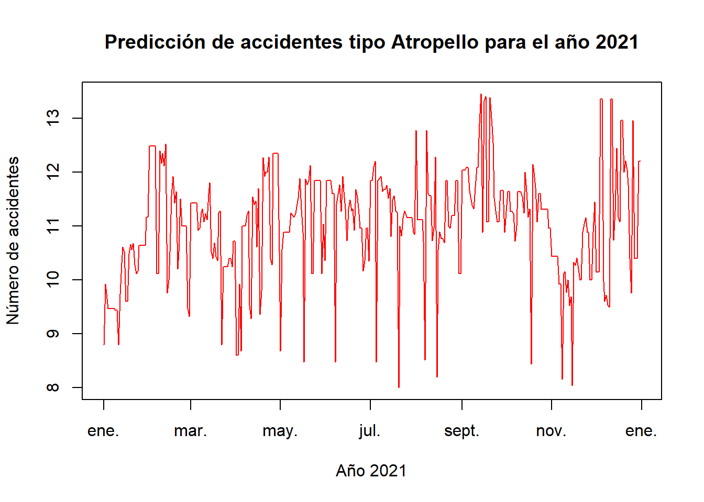
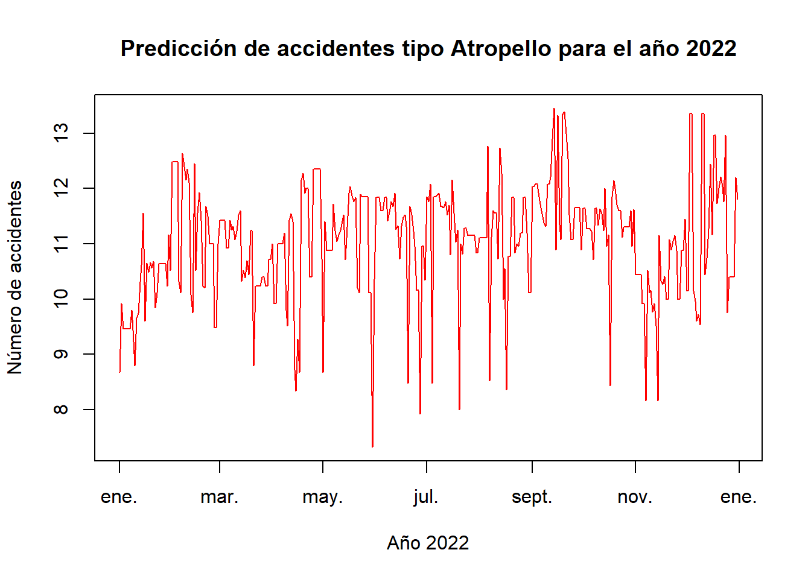
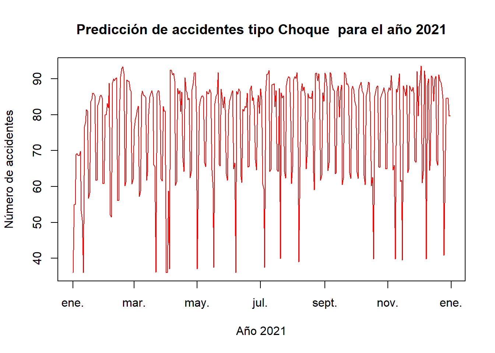
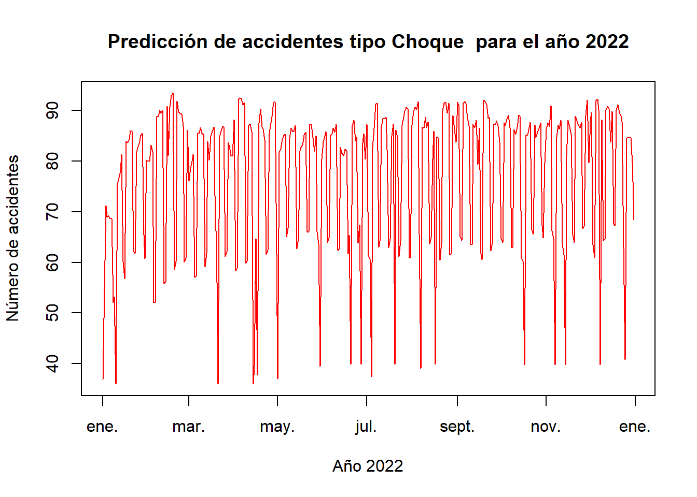
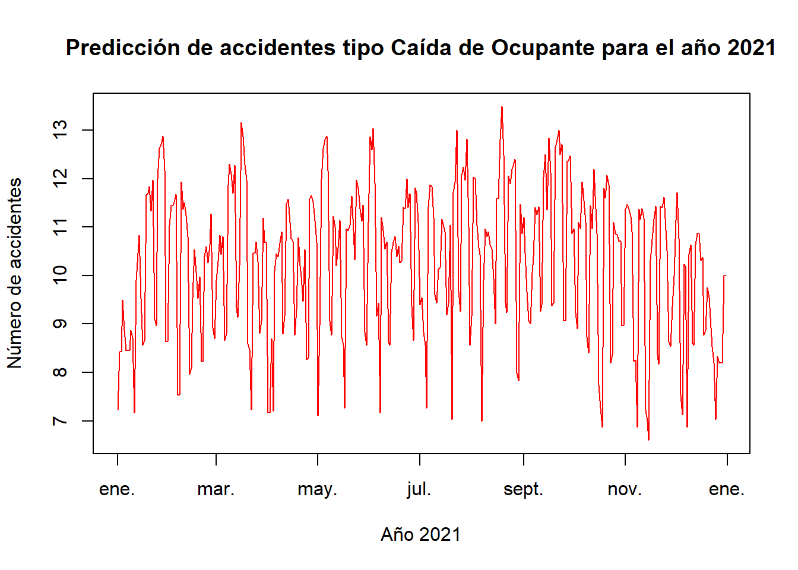
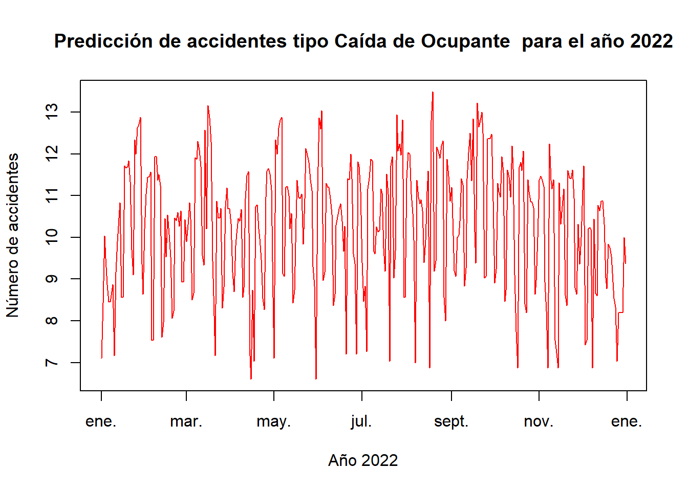
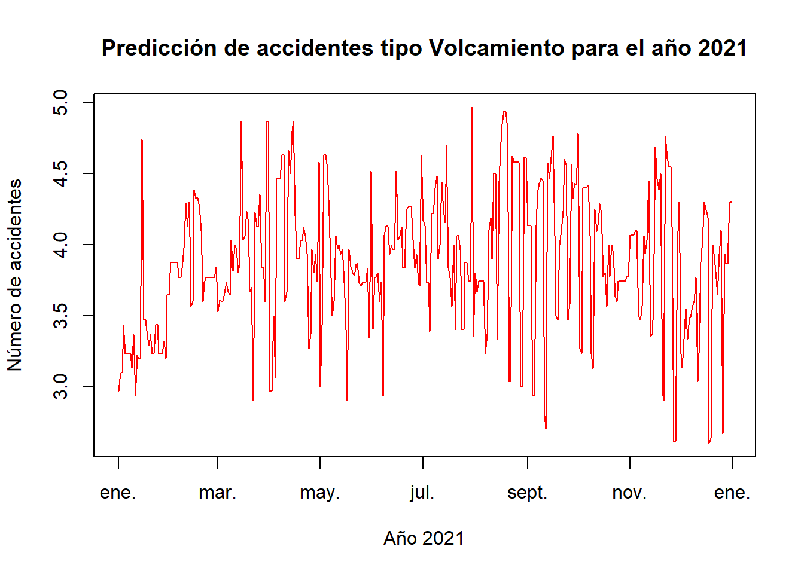
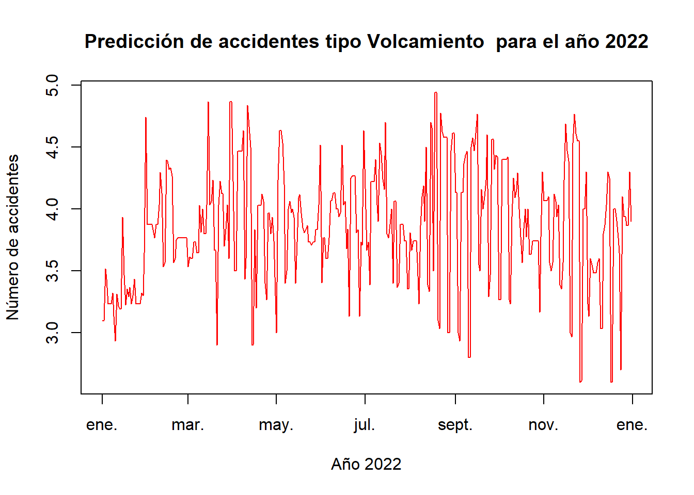
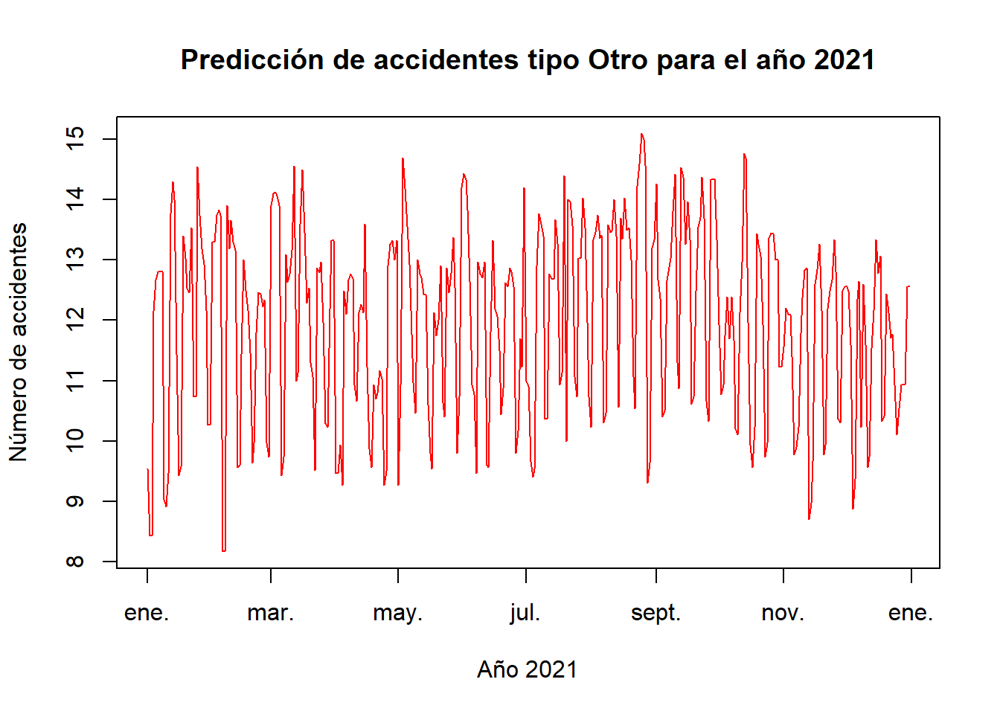
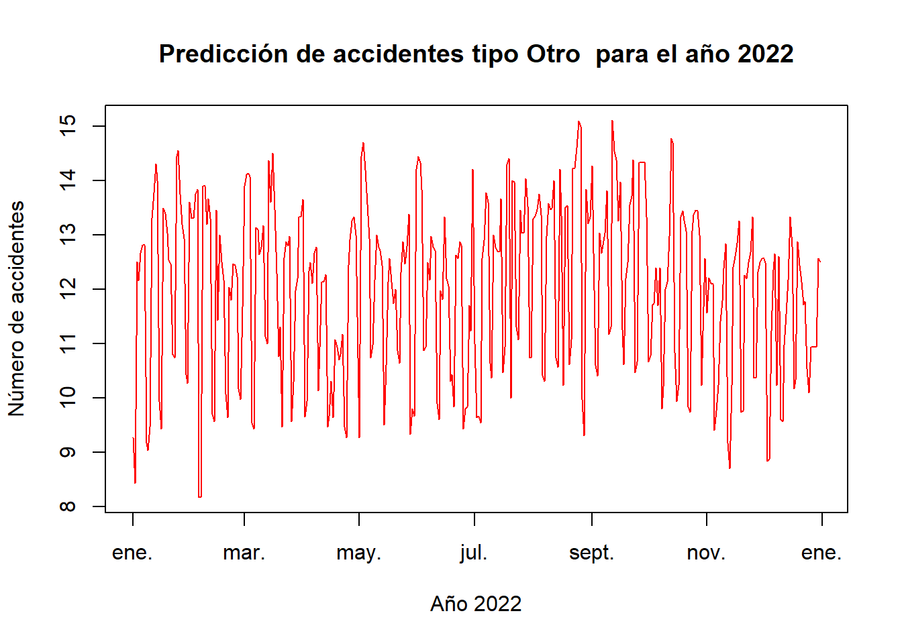

Análisis de incidentes viales en la ciudad de Medellín
1- Contexto del problema
A nivel mundial, se registran diariamente accidentes de transito de diferentes tipos en todas las ciudades del mundo, y la ciudad de Medellín, Antioquia no es la excepción a esto. En el caso de la ciudad de Medellín, la alcaldía registra cada uno de los accidentes producidos en la ciudad. En una noticia, la Secretaría de Movilidad (2021) menciona que “Durante 2020, el Cuerpo Oficial de Bomberos Medellín atendió 3.188 accidentes de tránsito, un año en el que se redujo la siniestralidad por el confinamiento estricto derivado de la pandemia. En 2019 habían sido 7.398 y en 2018 fueron 10.110 accidentes asistidos”.
Con la realización de este proyecto, se desea crear una serie de modelos que permita predecir la accidentalidad por tipo de accidente (Atropello, Choque, Caída de Ocupante, Volcamiento, Incendio, Otro) a nivel diario, semana y mensual.
Este proyecto ayudaría a (), ya que permitiría conocer un posible comportamiento de la cantidad de accidentes que se podrian tener en un intervalo de tiempo.
Para para crear los diferentes modelos, se hace uso de una base de información publicada por la Alcaldía de Medellín, la cual posee un registro de los accidentes producidos entre los años 2014 y 2020, y las características de estos (Coordenadas de la ubicación donde fue producido, el tipo de accidente, la fecha, la gravedad, entre otras) (Alcaldía de Medellín, 2021).
También con este trabajo, se creará un agrupamiento de los accidentes originados en los diferentes barrios de Medellín, y de acuerdo a una función propuesta, se podrá conocer una clasificación de accidentalidad en cada barrio (Muy alta, alta, media, baja).
2- Procesamiento de los datos
En la Tabla 1, se puede observar que en su mayoria, casi todas las variables son de tipo “character”, exceptuando las variables “MES” y “NRO_RADICADO” que son de tipo “integer” y la variable “Y..” que es de tipo “numeric”.
| AÑO | CBML | CLASE_ACCIDENTE | DIRECCION | DIRECCION.ENCASILLADA | DISEÑO | EXPEDIENTE | FECHA_ACCIDENTE | FECHA_ACCIDENTES | GRAVEDAD_ACCIDENTE | MES | NRO_RADICADO | NUMCOMUNA | BARRIO | COMUNA | LOCATION | X | Y.. |
|---|---|---|---|---|---|---|---|---|---|---|---|---|---|---|---|---|---|
| character | character | character | character | character | character | character | character | character | character | integer | integer | character | character | character | character | numeric | character |
2.1- Correción del formato de los datos
Para el procesamiento de los datos, vamos analizar principalmente la variable “AÑO”. Como podemos observar en la Tabla 2, la cual muestra los primeros 10 valores diferentes en esta variable, existen diferentes errores. El primero que podemos identificar es que existe un error de tipado para el año 2019, el cual aparece “2019\r”. Otro error que se puede observar es que hay error de almacenamiento en esta misma variable. Por último, como regla del proyecto, no se va a trabajar con registros del año 2017.
| AÑO | n |
|---|---|
| 2016 | 43293 |
| 2017 | 42489 |
| 2015 | 42431 |
| 2018 | 40005 |
| 2019\r | 25431 |
| 2014 | 20624 |
| 2020 | 19474 |
| 2019 | 16991 |
| 2017;0206;Choque;CR 52 CL 107;CR 052 107 000 00000;"";A000673223;25/12/2017 10:00:00;2017-12-25T15:00:00.000Z;Con muertos;12;62196;02;Andalucía;Santa Cruz;[-75.5574464031, 6.29966255324] | 3 |
| 2015;80003360020;Choque;CR 63 CL 50 C Sur 09;CR 063 S 050 C 009 00000;"";A000177042;13/05/2015 18:31:00;2015-05-13T23:31:00.000Z;Con muertos;5;050016000206201523690;80;Cabecera San Antonio de Prado;Corregimiento de San Antonio de Prado;[-75.6448608945, 6.17708308094] | 2 |
Una vez corregido lo anterior, En la tabla 3 podemos visualizar las nuevas frecuencias de los datos únicos de la variable “AÑO”
| AÑO | n |
|---|---|
| 2016 | 47103 |
| 2015 | 46172 |
| 2019 | 45795 |
| 2018 | 43358 |
| 2014 | 22415 |
| 2020 | 19717 |
Ahora, relizamos el análisis de la variable “CLASE_ACCIDENTE”. En la Tabla 4, podemos observar que existen errores de escritura con la clase accidente “Caída de Ocupante”, la cual se corregirá con este estandar. También se corregirán los valores que se muestran como “” por NA.
| CLASE_ACCIDENTE | n |
|---|---|
| Choque | 149303 |
| Otro | 24717 |
| Atropello | 21703 |
| Caida Ocupante | 13750 |
| Volcamiento | 8533 |
| Caída de Ocupante | 6509 |
| Incendio | 31 |
| Caída Ocupante | 7 |
| "" | 6 |
| Caida de Ocupante | 1 |
Realizando las modificaciones de los errores anteriores, se puede observar en la Tabla 5 los valores únicos corregidos.
| CLASE_ACCIDENTE | n |
|---|---|
| Choque | 149303 |
| Otro | 24717 |
| Atropello | 21703 |
| Caída de Ocupante | 20267 |
| Volcamiento | 8533 |
| Incendio | 31 |
| NA | 6 |
Realizando de manera similar el análisis en la variable “DISEÑO”, en la Tabla 6 se pueden observar los valores únicos para esta variable, y se observa que existen errores de escritura.
| DISEÑO | n |
|---|---|
| Tramo de via | 157764 |
| Interseccion | 35329 |
| Lote o Predio | 21737 |
| Glorieta | 5303 |
| Paso Elevado | 1064 |
| "" | 866 |
| Puente | 842 |
| Ciclo Ruta | 839 |
| Paso Inferior | 523 |
| Paso a Nivel | 101 |
| Tunel | 88 |
| Via peatonal | 50 |
| Pontón | 14 |
| Pont\xF3n | 7 |
| 826690.2 | 2 |
| 826675.44 | 1 |
| 829982.25 | 1 |
Una vez corregido los errores anteriormente mencionados, en la Tabla 7 se puede observar los valores únicos de la variable diseño corregidos.
| DISEÑO | n |
|---|---|
| Tramo de via | 157764 |
| Interseccion | 35329 |
| Lote o Predio | 21737 |
| Glorieta | 5303 |
| Paso Elevado | 1064 |
| NA | 899 |
| Puente | 842 |
| Ciclo Ruta | 839 |
| Paso Inferior | 523 |
| Paso a Nivel | 101 |
| Tunel | 88 |
| Via peatonal | 50 |
| Pontón | 21 |
Continuando con la variable “GRAVEDAD_ACCIDENTE”, se procede a realizar el mismo análisis que en las variables anteriores.
| GRAVEDAD_ACCIDENTE | n |
|---|---|
| Con heridos | 124887 |
| Solo daños | 77873 |
| Solo da\xF1os | 20560 |
| Con muertos | 1240 |
En la Tabla 8, podemos observar que existe un error de escritura y que este es corregido como se puede observar en la Tabla 9.
| GRAVEDAD_ACCIDENTE | n |
|---|---|
| Con heridos | 124887 |
| Solo daños | 98433 |
| Con muertos | 1240 |
Al analizar la variable “NUMCOMUNA”, podemos observar en la Tabla 10 los errores de escritura que hay en el número de la columna, puesto que existen varias formas para referenciar a la misma información, como lo es el casi de la comuna “2” y “02”. También hay valores que no hacen referencia a ningún número de comuna, estos valores se modificaran por valores NA.
| NUMCOMUNA | n |
|---|---|
| 10 | 43696 |
| 11 | 22135 |
| 05 | 18744 |
| 14 | 17770 |
| Sin Inf | 16492 |
| 15 | 15309 |
| 16 | 13796 |
| 07 | 12668 |
| 04 | 10853 |
| 09 | 7424 |
| 12 | 6591 |
| 03 | 5873 |
| 06 | 5199 |
| 08 | 4999 |
| 13 | 3547 |
| 80 | 3356 |
| 01 | 2770 |
| 02 | 2624 |
| 60 | 2233 |
| 5 | 1692 |
| 7 | 1130 |
| 4 | 1083 |
| 9 | 863 |
| 3 | 727 |
| 8 | 675 |
| 6 | 496 |
| 70 | 487 |
| 90 | 485 |
| 1 | 399 |
| 2 | 308 |
| In | 97 |
| 50 | 15 |
| 0 | 11 |
| AU | 10 |
| SN | 3 |
Corrigiendo lo anterior, se puede observar los números de las comunas corregidos en la Tabla 11.
| NUMCOMUNA | n |
|---|---|
| 10 | 43696 |
| 11 | 22135 |
| 5 | 20436 |
| 14 | 17770 |
| NA | 16613 |
| 15 | 15309 |
| 7 | 13798 |
| 16 | 13796 |
| 4 | 11936 |
| 9 | 8287 |
| 3 | 6600 |
| 12 | 6591 |
| 6 | 5695 |
| 8 | 5674 |
| 13 | 3547 |
| 80 | 3356 |
| 1 | 3169 |
| 2 | 2932 |
| 60 | 2233 |
| 70 | 487 |
| 90 | 485 |
| 50 | 15 |
Continuando con la variable “BARRIO”, se observa que también existen errores de escritura como se observa en la Tabla 12. Estos errores se corrigen, dando resultado a lo observado en la Tabla 13.
| x |
|---|
| "" |
| \xC1rea de Expansi\xF3n Altos de Calasanz |
| \xC1rea de Expansi\xF3n Pajarito |
| \xC1rea de Expansi\xF3n San Antonio de Prado |
| 0 |
| 0103 |
| 0105 |
| 0109 |
| 0202 |
| 0205 |
| 0208 |
| 0211 |
| 0301 |
| 0302 |
| 0303 |
| BARRIO | n |
|---|---|
| "" | 15492 |
| La Candelaria | 4998 |
| Campo Amor | 4385 |
| Perpetuo Socorro | 4207 |
| Caribe | 3977 |
Ahora, analizando la variable “COMUNA”, podemos observar en la Tabla 14, que existen errores de escritura y también existen valores que no hacen referencia a ninguna comuna, estos serán sustituidos por el valor NA. En la Tabla 15 se pueden ver los valores de la comunas corregidos.
| COMUNA | n |
|---|---|
| La Candelaria | 43750 |
| Laureles Estadio | 22186 |
| Castilla | 20466 |
| El Poblado | 17821 |
| Guayabal | 15350 |
| Robledo | 13802 |
| Aranjuez | 11947 |
| Belén | 11129 |
| "" | 9284 |
| Buenos Aires | 8287 |
| COMUNA | n |
|---|---|
| La Candelaria | 43750 |
| Laureles Estadio | 22186 |
| Castilla | 20466 |
| El Poblado | 17821 |
| NA | 16320 |
| Guayabal | 15350 |
| Belén | 13804 |
Ahora, se analiza la variable “MES”
| MES | n |
|---|---|
| 8 | 22838 |
| 7 | 21172 |
| 9 | 20128 |
| 10 | 20101 |
| 12 | 19514 |
| 11 | 18659 |
| 2 | 18378 |
| 3 | 17610 |
| 5 | 17224 |
| 1 | 16648 |
| 6 | 16621 |
| 4 | 15667 |
Se observa en la Tabla 16 que el formato de esta variable esta almacenado como dígito. Esto es cambiado por el nombre del mes como se observa en la Tabla 17.
| MES | n |
|---|---|
| Agosto | 22838 |
| Julio | 21172 |
| Septiembre | 20128 |
| Octubre | 20101 |
| Diciembre | 19514 |
| Noviembre | 18659 |
| Febrero | 18378 |
| Marzo | 17610 |
| Mayo | 17224 |
| Enero | 16648 |
| Junio | 16621 |
| Abril | 15667 |
La variable “LONGITUD” posee la latitud y la longitud del lugar donde ocurrió el accidente. Para facilidad de obtener estos valores, se cambia el formato de esta variable, creando dos variables en donde se almacene cada componente independiente.
Por último, la variable “FECHA_ACCIDENTE” como vimos anteriormente, posee un formato “character”, este sera cambiado por formato “date” para poder trabajar mejor con la fecha.
2.4- Análisis de duplicados
En la Tabla 18, podemos observar que hicisten 3 registros los cuales son duplicados en nuestra base de datos, estos registros serán eliminados.
| AÑO | CBML | CLASE_ACCIDENTE | DIRECCION | DIRECCION.ENCASILLADA | DISEÑO | EXPEDIENTE | FECHA_ACCIDENTE | FECHA_ACCIDENTES | GRAVEDAD_ACCIDENTE | MES | NRO_RADICADO | NUMCOMUNA | BARRIO | COMUNA | LOCATION | X | Y.. | LATITUD | LONGITUD | |
|---|---|---|---|---|---|---|---|---|---|---|---|---|---|---|---|---|---|---|---|---|
| 222221 | 2015 | 80003360020 | Choque | CR 63 CL 50 C Sur 09 | CR 063 S 050 C 009 00000 | NA | A000177042 | 2015-05-13 | 2015-05-13T23:31:00.000Z | Con muertos | Mayo | 050016000206201523690 | 80 | Cabecera San Antonio de Prado | Corregimiento de San Antonio de Prado | -75.6448608945, 6.17708308094 | 826508.06 | 118000 | -75.6448608945 | 6.17708308094 |
| 223276 | 2016 | 1018 | Atropello | CL 58 CR 50 | CL 058 050 000 00000 | NA | A000487308 | 2016-11-20 | 2016-11-20T07:05:00.000Z | Con muertos | Noviembre | 58560 | 10 | Villa Nueva | La Candelaria | -75.5642900962, 6.25591991287 | 835453.06 | 118000 | -75.5642900962 | 6.25591991287 |
| 223278 | 2016 | 1507 | Choque | CR 65 CL 2 | CR 065 002 000 00000 | NA | "" | 2016-11-21 | 2016-11-21T21:20:00.000Z | Con muertos | Noviembre | 58864 | 15 | Campo Amor | Guayabal | -75.5877675328, 6.21032079728 | 832839.71 | 118000 | -75.5877675328 | 6.21032079728 |
Por otro lado la variable “EXPEDIENTE”, el cual es un valor que asigna UNE que indica el número del registro del accidente ocurrido, el cual es un valor único, posee 348 registros duplicados. Estos registro duplicados poseen la misma información del accidente pero en las demás columnas de la base de datos existen cambios o variaciones en la información, por lo tanto también serán eliminados estos registros.
2.3- Análisis de los valores NA
| x | |
|---|---|
| AÑO | 0 |
| CBML | 0 |
| CLASE_ACCIDENTE | 6 |
| DIRECCION | 0 |
| DIRECCION.ENCASILLADA | 0 |
| DISEÑO | 473 |
| EXPEDIENTE | 0 |
| FECHA_ACCIDENTE | 1 |
| FECHA_ACCIDENTES | 0 |
| GRAVEDAD_ACCIDENTE | 0 |
| MES | 0 |
| NRO_RADICADO | 0 |
| NUMCOMUNA | 16585 |
| BARRIO | 1046 |
| COMUNA | 16295 |
| LOCATION | 0 |
| X | 0 |
| Y.. | 0 |
| LATITUD | 0 |
| LONGITUD | 0 |
Se puede observar en la Tabla 19, que las variables “NUMCOMUNA”, “COMUNA” y “BARRIO” poseen bastantes valores NA. La cantidad de registros en los que las 3 columnas son NA a la vez son 1018, estos registros serán eliminados ya que no aportan información sobre donde fue el accidente. También serán eliminados los registros donde las variables “CLASE_ACCIDENTE”, “DISEÑO” y “FECHA_ACCIDENTE” son NA ya que no son significativos. También se va a eliminar los registros donde las variables “NUMCOMUNA” y “COMUNA” son NA a la vez, ya que tampoco aportan suficiente ubicación de estos registros. Los resultados de lo anterior, se puede observar en la Tabla 20.
| x | |
|---|---|
| AÑO | 0 |
| CBML | 0 |
| CLASE_ACCIDENTE | 0 |
| DIRECCION | 0 |
| DIRECCION.ENCASILLADA | 0 |
| DISEÑO | 0 |
| EXPEDIENTE | 0 |
| FECHA_ACCIDENTE | 0 |
| FECHA_ACCIDENTES | 0 |
| GRAVEDAD_ACCIDENTE | 0 |
| MES | 0 |
| NRO_RADICADO | 0 |
| NUMCOMUNA | 0 |
| BARRIO | 0 |
| COMUNA | 0 |
| LOCATION | 0 |
| X | 0 |
| Y.. | 0 |
| LATITUD | 0 |
| LONGITUD | 0 |
2.4- Transformación y creación de nuevas variables
Para el proyecto, se necesita conocer las variables “Día” y “Semana”, ambas serán calculadas mediante la variable “FECHA_ACCIDENTE”. También como fechas especiales, se tendrán en cuenta los días que son quincena, las fechas que son festivos en Colombia, y los días que son fines de semana (Domingo, Sábado).
2.5- Selección de las variables
Las variables seleccionadas para el resto del trabajo son:
Año: año de ocurriencia del accidente.
Clase de accidente: clasificación del accidente.
Diseño: sitio de la vía donde ocurrió el accidente.
Fecha del accidente.
Gravedad del accidente.
Mes: mes en el que ocurrió el accidente.
Barrio: barrio donde ocurrió el accidente.
Comuna: comuna en la que ocurrió el accidente.
Latitud: latitud de donde fue el accidente.
Longitud: longitud de donde fue el accidente.
Dia: número del dia en el que sucedió el accidente.
Semana: número de la semana en la que ocurrió el accidente.
Dia: de la semana nombre del día en el que ocurrió el accidente.
Quincena: indica si el dia que ocurrió el accidente fue quincena o no.
Festivo: indica si el dia que ocurrió el accidente fue festivo no.
Fin de semana: indica si el dia que ocurrió el accidente fue fin de semana o no.
En la Tabla 21 se puede observar el tamaño de la base de datos ya con los datos perfilados.
| Filas | Columnas |
|---|---|
| 207061 | 16 |
3- Modelo predictivo
Ya con la limpieza realizada a los datos, se procede con la creación del modelo de predicción. Para realizar el modelo, se escoge el algoritmo KNN (K vecinos más cercanos). Este algoritmo “es un clasificador de aprendizaje supervisado no paramétrico, que utiliza la proximidad para hacer clasificaciones o predicciones sobre la agrupación de un punto de datos individual”(IBM, 2022).
3.1- Construcción del modelo
Como primer paso, se va a crear un nuevo dataset, en el que podemos observar la cantidad de cada tipo de accidente (Atropello, Choque, Caída de Ocupante, Volcamiento, Incendio, Otro) por fecha registrada. El dataset nuevo se puede observar en la Tabla 22.
Ya con el dataset anteriormente construido, se van a crear una serie de modelos por cada tipo de accidente, esto nos permitirá conocer el nivel de accidentalidad dependiendo del tipo de accidente.
Estos modelo se va construir haciendo uso de los registros de los accidentes registrados en los años 2014, 2015, 2016 y 2018. Para la validación de los modelos se van a utilizar los registros de los accidentes registrados en los años 2019 y 2020.
| FECHA_ACCIDENTE | CLASE_ACCIDENTE | Numero_Accidente | Año | Dia | Semana | DiaDeLaSemana | Quincena | Festivo | Finde | MES |
|---|---|---|---|---|---|---|---|---|---|---|
| 2014-07-04 | Choque | 22 | 2014 | 4 | 27 | viernes | No | No | No | Julio |
| 2014-07-05 | Atropello | 25 | 2014 | 5 | 27 | sábado | No | No | Si | Julio |
| 2014-07-05 | Caída de Ocupante | 18 | 2014 | 5 | 27 | sábado | No | No | Si | Julio |
| 2014-07-05 | Choque | 63 | 2014 | 5 | 27 | sábado | No | No | Si | Julio |
Debido a que se va a trabajar con la técnica de KNN, se tiene que encontrar el K óptimo para cada modelo. Para esto se realizarán diferentes pruebas usando distintos valores de K, los cuales van desde K=2 hasta K=20. Para seleccionar el K óptimo, se evaluará en cada modelo-prueba la métrica MAE (Error Absoluto Medio) haciendo uso de los datos de entrenamiento y los datos de validación, y medirá el porcentaje de variación entre ambos errores calculados. Se escogerá el valor K que menor valor de variación posea. También se tiene que tener en cuenta que el valor K seleccionado debe tener un porcentaje de variación menor a 15%.
3.1.1- K óptimo para accidente tipo “Atropello”
Para la selección de las variables que nos ayuden a encontrar el K optimo para este modelo, se realiza un Análisis de Componentes Principales el cual se puede ver en la Tabla 23. Para conservar el 52% de la variabilidad explicada en las variables, se va a trabajar con las primeras 6 componentes principales.
| PC1 | PC2 | PC3 | PC4 | PC5 | |
|---|---|---|---|---|---|
| Standard deviation | 1.492 | 1.479 | 1.432 | 1.352 | 1.053 |
| Proportion of Variance | 0.1112 | 0.1093 | 0.1025 | 0.09135 | 0.05538 |
| Cumulative Proportion | 0.1112 | 0.2205 | 0.323 | 0.4143 | 0.4697 |
| PC6 | PC7 | PC8 | PC9 | PC10 | |
|---|---|---|---|---|---|
| Standard deviation | 1.052 | 1.051 | 1.049 | 1.045 | 1.042 |
| Proportion of Variance | 0.05529 | 0.05517 | 0.05495 | 0.05458 | 0.05427 |
| Cumulative Proportion | 0.525 | 0.5802 | 0.6351 | 0.6897 | 0.744 |
| PC11 | PC12 | PC13 | PC14 | PC15 | |
|---|---|---|---|---|---|
| Standard deviation | 1.039 | 1.038 | 1.037 | 1.022 | 0.9193 |
| Proportion of Variance | 0.05399 | 0.0538 | 0.05377 | 0.05222 | 0.04223 |
| Cumulative Proportion | 0.798 | 0.8518 | 0.9055 | 0.9578 | 1 |
| PC16 | PC17 | PC18 | PC19 | |
|---|---|---|---|---|
| Standard deviation | 0.01406 | 1.008e-15 | 8.231e-16 | 4.762e-16 |
| Proportion of Variance | 1e-05 | 0 | 0 | 0 |
| Cumulative Proportion | 1 | 1 | 1 | 1 |
| PC20 | |
|---|---|
| Standard deviation | 1.37e-16 |
| Proportion of Variance | 0 |
| Cumulative Proportion | 1 |
En la Tabla 24, podemos observar la variación del error MAE a medida que aumenta K, y con eso decide utilizar K=25, el cual tiene una variación en la métrica de error MAE de 20.56%, el mínimo porcentaje encontrado.
| Mae_t | Mae_v | Variacion | K |
|---|---|---|---|
| 2.350248 | 4.04845 | 41.94696 | 2 |
| 2.597585 | 3.934146 | 33.97334 | 3 |
| 2.75963 | 3.929676 | 29.77462 | 4 |
| 2.820016 | 3.88108 | 27.33938 | 5 |
| 2.859934 | 3.871613 | 26.13068 | 6 |
| 2.888706 | 3.861312 | 25.18848 | 7 |
| 2.902596 | 3.826006 | 24.1351 | 8 |
| 2.927217 | 3.825479 | 23.48103 | 9 |
| 2.926846 | 3.830827 | 23.59755 | 10 |
| 2.923116 | 3.835354 | 23.78497 | 11 |
| 2.937065 | 3.825655 | 23.22714 | 12 |
| 2.939413 | 3.813323 | 22.91728 | 13 |
| 2.94854 | 3.820351 | 22.82019 | 14 |
| 2.957751 | 3.805666 | 22.28033 | 15 |
| 2.967779 | 3.814259 | 22.19251 | 16 |
| 2.975596 | 3.813725 | 21.97665 | 17 |
| 2.984907 | 3.806294 | 21.57972 | 18 |
| 2.985939 | 3.798291 | 21.38731 | 19 |
| 2.987527 | 3.798736 | 21.35469 | 20 |
| 2.993043 | 3.810219 | 21.44696 | 21 |
| 2.997499 | 3.818345 | 21.49743 | 22 |
| 2.997801 | 3.81285 | 21.37636 | 23 |
| 3.01076 | 3.801008 | 20.79049 | 24 |
| 3.019686 | 3.801442 | 20.56473 | 25 |
| 3.022514 | 3.807976 | 20.62676 | 26 |
| 3.020571 | 3.809976 | 20.7194 | 27 |
| 3.025785 | 3.824374 | 20.88158 | 28 |
| 3.029129 | 3.823901 | 20.78431 | 29 |
| 3.034508 | 3.836711 | 20.9086 | 30 |
3.1.2- K óptimo para accidente tipo “Choque”
Se realiza un Análisis de Componentes Principales para la selección de las variables, el cual se puede ver en la Tabla 25. Para conservar el 22% de la variabilidad explicada en las variables, se va a trabajar con las primeras 2 componentes principales.
| PC1 | PC2 | PC3 | PC4 | PC5 | |
|---|---|---|---|---|---|
| Standard deviation | 1.491 | 1.479 | 1.431 | 1.352 | 1.053 |
| Proportion of Variance | 0.1112 | 0.1093 | 0.1024 | 0.09133 | 0.05542 |
| Cumulative Proportion | 0.1112 | 0.2204 | 0.3229 | 0.4142 | 0.4696 |
| PC6 | PC7 | PC8 | PC9 | PC10 | |
|---|---|---|---|---|---|
| Standard deviation | 1.052 | 1.051 | 1.049 | 1.045 | 1.042 |
| Proportion of Variance | 0.05535 | 0.05524 | 0.05502 | 0.05459 | 0.05424 |
| Cumulative Proportion | 0.525 | 0.5802 | 0.6352 | 0.6898 | 0.744 |
| PC11 | PC12 | PC13 | PC14 | PC15 | |
|---|---|---|---|---|---|
| Standard deviation | 1.039 | 1.037 | 1.037 | 1.022 | 0.9197 |
| Proportion of Variance | 0.05396 | 0.05377 | 0.05375 | 0.05219 | 0.04227 |
| Cumulative Proportion | 0.798 | 0.8518 | 0.9055 | 0.9577 | 1 |
| PC16 | PC17 | PC18 | PC19 | PC20 | |
|---|---|---|---|---|---|
| Standard deviation | 0.01406 | 1.88e-15 | 9.862e-16 | 8.57e-16 | 2.675e-16 |
| Proportion of Variance | 1e-05 | 0 | 0 | 0 | 0 |
| Cumulative Proportion | 1 | 1 | 1 | 1 | 1 |
En la Tabla 26, podemos observar la variación del error MAE a medida que aumenta K, y con eso decide utilizar K=29, el cual tiene una variación en la métrica de error MAE de 40.7%, el mínimo porcentaje encontrado.
| Mae_t | Mae_v | Variacion | K |
|---|---|---|---|
| 9.616419 | 22.5821 | 57.41575 | 2 |
| 11.26895 | 21.53255 | 47.66552 | 3 |
| 11.69216 | 21.12902 | 44.66301 | 4 |
| 11.80667 | 21.00469 | 43.79032 | 5 |
| 11.95302 | 20.96497 | 42.98576 | 6 |
| 12.02578 | 20.81939 | 42.23762 | 7 |
| 12.0632 | 20.80263 | 42.01117 | 8 |
| 12.00591 | 21.00927 | 42.85424 | 9 |
| 11.99967 | 21.13041 | 43.21135 | 10 |
| 11.98415 | 21.25016 | 43.60444 | 11 |
| 12.02836 | 21.28599 | 43.49164 | 12 |
| 12.09018 | 21.35722 | 43.39067 | 13 |
| 12.09307 | 21.30397 | 43.23558 | 14 |
| 12.21849 | 21.30933 | 42.66129 | 15 |
| 12.24792 | 21.33687 | 42.5974 | 16 |
| 12.30752 | 21.28961 | 42.19 | 17 |
| 12.32474 | 21.245 | 41.98758 | 18 |
| 12.33848 | 21.19422 | 41.78374 | 19 |
| 12.32885 | 21.20186 | 41.85014 | 20 |
| 12.33201 | 21.23961 | 41.93863 | 21 |
| 12.36401 | 21.25518 | 41.8306 | 22 |
| 12.38298 | 21.24074 | 41.70174 | 23 |
| 12.39882 | 21.22235 | 41.57659 | 24 |
| 12.43953 | 21.25272 | 41.46853 | 25 |
| 12.49342 | 21.18167 | 41.01777 | 26 |
| 12.50031 | 21.16222 | 40.93102 | 27 |
| 12.5322 | 21.14676 | 40.73699 | 28 |
| 12.53403 | 21.13311 | 40.69007 | 29 |
| 12.53924 | 21.17777 | 40.79055 | 30 |
3.1.3- K óptimo para accidente tipo “Caída de Ocupante”
Se realiza un Análisis de Componentes Principales para la selección de las variables, el cual se puede ver en la Tabla 27. Para conservar el 22% de la variabilidad explicada en las variables, se va a trabajar con las primeras 2 componentes principales.
| PC1 | PC2 | PC3 | PC4 | PC5 | |
|---|---|---|---|---|---|
| Standard deviation | 1.492 | 1.479 | 1.432 | 1.352 | 1.053 |
| Proportion of Variance | 0.1113 | 0.1093 | 0.1025 | 0.09134 | 0.05543 |
| Cumulative Proportion | 0.1113 | 0.2206 | 0.3231 | 0.4145 | 0.4699 |
| PC6 | PC7 | PC8 | PC9 | PC10 | |
|---|---|---|---|---|---|
| Standard deviation | 1.052 | 1.051 | 1.049 | 1.045 | 1.043 |
| Proportion of Variance | 0.05533 | 0.05522 | 0.05499 | 0.05462 | 0.05431 |
| Cumulative Proportion | 0.5253 | 0.5805 | 0.6355 | 0.6901 | 0.7444 |
| PC11 | PC12 | PC13 | PC14 | PC15 | |
|---|---|---|---|---|---|
| Standard deviation | 1.039 | 1.038 | 1.033 | 1.022 | 0.9188 |
| Proportion of Variance | 0.05399 | 0.05384 | 0.05334 | 0.05224 | 0.04219 |
| Cumulative Proportion | 0.7984 | 0.8522 | 0.9056 | 0.9578 | 1 |
| PC16 | PC17 | PC18 | PC19 | |
|---|---|---|---|---|
| Standard deviation | 0.01407 | 1.286e-15 | 8.634e-16 | 2.316e-16 |
| Proportion of Variance | 1e-05 | 0 | 0 | 0 |
| Cumulative Proportion | 1 | 1 | 1 | 1 |
| PC20 | |
|---|---|
| Standard deviation | 6.377e-17 |
| Proportion of Variance | 0 |
| Cumulative Proportion | 1 |
En la Tabla 28, podemos observar la variación del error MAE a medida que aumenta K, y con eso decide utilizar K=30, el cual tiene una variación en la métrica de error MAE de 22.29%, el mínimo porcentaje encontrado.
| Mae_t | Mae_v | Variacion | K |
|---|---|---|---|
| 2.327647 | 4.548634 | 48.82756 | 2 |
| 2.662373 | 4.417696 | 39.73389 | 3 |
| 2.818984 | 4.301578 | 34.46627 | 4 |
| 2.892045 | 4.280179 | 32.43169 | 5 |
| 2.920165 | 4.299135 | 32.07552 | 6 |
| 2.952588 | 4.243735 | 30.42479 | 7 |
| 2.964222 | 4.217383 | 29.71419 | 8 |
| 2.968249 | 4.184757 | 29.06999 | 9 |
| 2.987092 | 4.15073 | 28.03453 | 10 |
| 2.994432 | 4.140185 | 27.67395 | 11 |
| 3.014717 | 4.119286 | 26.81458 | 12 |
| 3.032475 | 4.102901 | 26.0895 | 13 |
| 3.052118 | 4.076437 | 25.1278 | 14 |
| 3.071046 | 4.079276 | 24.71589 | 15 |
| 3.079313 | 4.0803 | 24.53219 | 16 |
| 3.087286 | 4.064271 | 24.03837 | 17 |
| 3.101145 | 4.042709 | 23.29041 | 18 |
| 3.098809 | 4.051125 | 23.50745 | 19 |
| 3.096789 | 4.034392 | 23.24026 | 20 |
| 3.100576 | 4.030164 | 23.06576 | 21 |
| 3.110096 | 4.035222 | 22.92627 | 22 |
| 3.117747 | 4.031931 | 22.67361 | 23 |
| 3.124771 | 4.039694 | 22.64832 | 24 |
| 3.133575 | 4.043199 | 22.49764 | 25 |
| 3.136379 | 4.049269 | 22.54456 | 26 |
| 3.129885 | 4.050205 | 22.72282 | 27 |
| 3.142087 | 4.04986 | 22.41492 | 28 |
| 3.143471 | 4.051387 | 22.41001 | 29 |
| 3.145179 | 4.047362 | 22.29064 | 30 |
3.1.4- K óptimo para accidente tipo “Volcamiento”
Se realiza un Análisis de Componentes Principales para la selección de las variables, el cual se puede ver en la Tabla 29. Para conservar el 32.25% de la variabilidad explicada en las variables, se va a trabajar con las primeras 3 componentes principales.
| PC1 | PC2 | PC3 | PC4 | PC5 | |
|---|---|---|---|---|---|
| Standard deviation | 1.502 | 1.472 | 1.423 | 1.348 | 1.056 |
| Proportion of Variance | 0.1129 | 0.1084 | 0.1013 | 0.09092 | 0.0558 |
| Cumulative Proportion | 0.1129 | 0.2212 | 0.3225 | 0.4134 | 0.4692 |
| PC6 | PC7 | PC8 | PC9 | PC10 | |
|---|---|---|---|---|---|
| Standard deviation | 1.053 | 1.053 | 1.051 | 1.049 | 1.047 |
| Proportion of Variance | 0.05549 | 0.05542 | 0.05528 | 0.05505 | 0.05479 |
| Cumulative Proportion | 0.5247 | 0.5801 | 0.6354 | 0.6904 | 0.7452 |
| PC11 | PC12 | PC13 | PC14 | PC15 | |
|---|---|---|---|---|---|
| Standard deviation | 1.043 | 1.039 | 1.022 | 1.02 | 0.9161 |
| Proportion of Variance | 0.05439 | 0.05401 | 0.05229 | 0.05209 | 0.04198 |
| Cumulative Proportion | 0.7996 | 0.8536 | 0.9059 | 0.958 | 1 |
| PC16 | PC17 | PC18 | PC19 | |
|---|---|---|---|---|
| Standard deviation | 0.01403 | 1.671e-15 | 1.175e-15 | 8.185e-16 |
| Proportion of Variance | 1e-05 | 0 | 0 | 0 |
| Cumulative Proportion | 1 | 1 | 1 | 1 |
| PC20 | |
|---|---|
| Standard deviation | 5.857e-16 |
| Proportion of Variance | 0 |
| Cumulative Proportion | 1 |
En la Tabla 30, podemos observar la variación del error MAE a medida que aumenta K, y con eso decide utilizar K=30, el cual tiene una variación en la métrica de error MAE de 23.96%, el mínimo porcentaje encontrado.
| Mae_t | Mae_v | Variacion | K |
|---|---|---|---|
| 1.401319 | 2.553198 | 45.11512 | 2 |
| 1.547278 | 2.473684 | 37.45047 | 3 |
| 1.635194 | 2.44101 | 33.01156 | 4 |
| 1.65453 | 2.423845 | 31.73943 | 5 |
| 1.678438 | 2.428675 | 30.8908 | 6 |
| 1.697514 | 2.38482 | 28.82003 | 7 |
| 1.699472 | 2.379622 | 28.58228 | 8 |
| 1.708046 | 2.355646 | 27.49141 | 9 |
| 1.71729 | 2.343247 | 26.71324 | 10 |
| 1.712509 | 2.33639 | 26.7028 | 11 |
| 1.713361 | 2.327852 | 26.39731 | 12 |
| 1.714328 | 2.327668 | 26.35 | 13 |
| 1.719112 | 2.325461 | 26.07436 | 14 |
| 1.716623 | 2.317532 | 25.92883 | 15 |
| 1.719271 | 2.316008 | 25.76577 | 16 |
| 1.723741 | 2.319753 | 25.69291 | 17 |
| 1.722246 | 2.329723 | 26.07507 | 18 |
| 1.728736 | 2.324119 | 25.61759 | 19 |
| 1.733013 | 2.319707 | 25.29171 | 20 |
| 1.736515 | 2.326316 | 25.35343 | 21 |
| 1.738501 | 2.324423 | 25.20718 | 22 |
| 1.741037 | 2.323427 | 25.06598 | 23 |
| 1.745811 | 2.326065 | 24.94574 | 24 |
| 1.752702 | 2.319763 | 24.4448 | 25 |
| 1.754692 | 2.322156 | 24.43696 | 26 |
| 1.753131 | 2.31867 | 24.39067 | 27 |
| 1.755655 | 2.318687 | 24.28237 | 28 |
| 1.759039 | 2.313945 | 23.98096 | 29 |
| 1.758873 | 2.313212 | 23.96401 | 30 |
3.1.5- K óptimo para accidente tipo “Incendio”
Se realiza un Análisis de Componentes Principales para la selección de las variables, el cual se puede ver en la Tabla 31. Para conservar el 99.9% de la variabilidad explicada en las variables, se va a trabajar con las primeras 12 componentes principales.
| PC1 | PC2 | PC3 | PC4 | PC5 | |
|---|---|---|---|---|---|
| Standard deviation | 2.439 | 2.133 | 1.873 | 1.477 | 1.337 |
| Proportion of Variance | 0.2509 | 0.1919 | 0.1479 | 0.09203 | 0.07537 |
| Cumulative Proportion | 0.2509 | 0.4428 | 0.5907 | 0.6827 | 0.7581 |
| PC6 | PC7 | PC8 | PC9 | PC10 | |
|---|---|---|---|---|---|
| Standard deviation | 1.169 | 1.115 | 1.065 | 0.8822 | 0.7949 |
| Proportion of Variance | 0.05766 | 0.05239 | 0.04783 | 0.03282 | 0.02664 |
| Cumulative Proportion | 0.8158 | 0.8681 | 0.916 | 0.9488 | 0.9754 |
| PC11 | PC12 | PC13 | PC14 | PC15 | |
|---|---|---|---|---|---|
| Standard deviation | 0.5961 | 0.4537 | 0.1455 | 0.006643 | 2.31e-16 |
| Proportion of Variance | 0.01498 | 0.00868 | 0.00089 | 0 | 0 |
| Cumulative Proportion | 0.9904 | 0.9991 | 1 | 1 | 1 |
| PC16 | |
|---|---|
| Standard deviation | 1.314e-16 |
| Proportion of Variance | 0 |
| Cumulative Proportion | 1 |
En la Tabla 32, podemos observar que no existe variación del error MAE a medida que aumenta K. Esto se debe a que la cantidad de registro tanto para entrenamiento y para validación son muy pocos. La cantidad de registros para datos de entrenamiento son de 16, y para validación son 8, esto hace que el modelo funcione perfectamente con cualquier valor K. Debido a los pocos registros existentes de este tipo de accidente, no se va a generar ningún modelo de predicción para esta categoría de accidente.
| Mae_t | Mae_v | Variacion | K |
|---|---|---|---|
| 0 | 0 | NaN | 2 |
| 0 | 0 | NaN | 3 |
| 0 | 0 | NaN | 4 |
| 0 | 0 | NaN | 5 |
| 0 | 0 | NaN | 6 |
3.1.6- K óptimo para accidente tipo “Otro”
Se realiza un Análisis de Componentes Principales para la selección de las variables, el cual se puede ver en la Tabla 33. Para conservar el 22% de la variabilidad explicada en las variables, se va a trabajar con las primeras 2 componentes principales.
| PC1 | PC2 | PC3 | PC4 | PC5 | |
|---|---|---|---|---|---|
| Standard deviation | 1.492 | 1.479 | 1.432 | 1.352 | 1.053 |
| Proportion of Variance | 0.1112 | 0.1093 | 0.1025 | 0.09135 | 0.05538 |
| Cumulative Proportion | 0.1112 | 0.2205 | 0.323 | 0.4143 | 0.4697 |
| PC6 | PC7 | PC8 | PC9 | PC10 | |
|---|---|---|---|---|---|
| Standard deviation | 1.052 | 1.051 | 1.049 | 1.045 | 1.042 |
| Proportion of Variance | 0.05529 | 0.05517 | 0.05495 | 0.05458 | 0.05427 |
| Cumulative Proportion | 0.525 | 0.5802 | 0.6351 | 0.6897 | 0.744 |
| PC11 | PC12 | PC13 | PC14 | PC15 | |
|---|---|---|---|---|---|
| Standard deviation | 1.039 | 1.038 | 1.037 | 1.022 | 0.9193 |
| Proportion of Variance | 0.05399 | 0.0538 | 0.05377 | 0.05222 | 0.04223 |
| Cumulative Proportion | 0.798 | 0.8518 | 0.9055 | 0.9578 | 1 |
| PC16 | PC17 | PC18 | PC19 | |
|---|---|---|---|---|
| Standard deviation | 0.01406 | 1.008e-15 | 8.231e-16 | 4.762e-16 |
| Proportion of Variance | 1e-05 | 0 | 0 | 0 |
| Cumulative Proportion | 1 | 1 | 1 | 1 |
| PC20 | |
|---|---|
| Standard deviation | 1.37e-16 |
| Proportion of Variance | 0 |
| Cumulative Proportion | 1 |
En la Tabla 34, podemos observar la variación del error MAE a medida que aumenta K, y con eso decide utilizar K=30, el cual tiene una variación en la métrica de error MAE de 20.9%, el mínimo porcentaje encontrado.
| Mae_t | Mae_v | Variacion | K |
|---|---|---|---|
| 2.861808 | 5.143092 | 44.35628 | 2 |
| 3.190424 | 4.954028 | 35.59939 | 3 |
| 3.348562 | 4.807401 | 30.34569 | 4 |
| 3.379709 | 4.733679 | 28.60291 | 5 |
| 3.424952 | 4.71931 | 27.42686 | 6 |
| 3.473626 | 4.696693 | 26.04101 | 7 |
| 3.483037 | 4.723844 | 26.26689 | 8 |
| 3.500023 | 4.709061 | 25.67473 | 9 |
| 3.513251 | 4.696783 | 25.1988 | 10 |
| 3.534645 | 4.702927 | 24.8416 | 11 |
| 3.554265 | 4.678509 | 24.02995 | 12 |
| 3.566632 | 4.673587 | 23.68534 | 13 |
| 3.566347 | 4.693119 | 24.00902 | 14 |
| 3.569272 | 4.695279 | 23.9817 | 15 |
| 3.578226 | 4.69296 | 23.75332 | 16 |
| 3.5873 | 4.685147 | 23.43251 | 17 |
| 3.590331 | 4.685895 | 23.38004 | 18 |
| 3.594999 | 4.674792 | 23.0982 | 19 |
| 3.608015 | 4.671662 | 22.76807 | 20 |
| 3.607172 | 4.66674 | 22.70466 | 21 |
| 3.609469 | 4.646409 | 22.31703 | 22 |
| 3.615825 | 4.6415 | 22.09793 | 23 |
| 3.616133 | 4.639667 | 22.06052 | 24 |
| 3.617175 | 4.631368 | 21.89835 | 25 |
| 3.620833 | 4.621962 | 21.66026 | 26 |
| 3.634587 | 4.624705 | 21.40933 | 27 |
| 3.640542 | 4.619077 | 21.18463 | 28 |
| 3.64288 | 4.614321 | 21.05274 | 29 |
| 3.654457 | 4.620179 | 20.90227 | 30 |
3.2 - Comportamiento de la accidentalidad en los años 2021 y 2022
3.2.1- Predicción de la accidentalidad para tipo de accidente “Atropello”


Para los accidente tipo Atropello podemos evidenciar que el punto más bajo de accidentes en el año 2021 (gráfica 1) se alcanza a finales del mes de Julio, sin embargo, en el año 2022 (gráfica 2), el punto mas bajo es alcanzado aproximadamente en los primeros días del mes de Junio. Por otro lado, los puntos más altos se alcanzan aproximadamente en la misma época en ambos años. y por último, podemos evidenciar que, en promedio, en el año 2022, se tienen mayor cantidad de picos bajos que en el año 2021.
3.2.2- Predicción de la accidentalidad para tipo de accidente “Choque”


Entre las grádicas 3 y 4 no se logran evidenciar diferencias grandes, tienen aproximadamente el mismo comportamiento en ambos años tanto en los picos bajos como en los picos altos. Esto significa que el comportamiento de las accidentes de tipo Choque va a ser muy similar en ambos años.
3.2.3- Predicción de la accidentalidad para tipo de accidente “Caída de Ocupante”


Luego de observar las gráficas 5 y 6 podemos observar que, en la gráfica 6, hay picos más profundos que en la gráfica 5. Además, en los finales del mes de Junio hay una mayor cantidad de picos bajos en la gráfica 6.
3.2.4- Predicción de la accidentalidad para tipo de accidente “Volcamiento”


La variación más notoria es en los primeros 3 meses en donde hay mayor cantidad de picos altos en la gráfica 8. Por otro lado, vemos en la grafica 7, en el mes de agosto, el pico mas alto de los 2 años de predicción.
3.2.5- Predicción de la accidentalidad para tipo de accidente “Otro”


En las gráficas 9 y 10 podemos encontrar un comportamiento muy similar a lo largo del año, a excepción del mes septiembre donde podemos ver un pico mas alto en la gráfica 10.
4- Agrupamiento de los barrios de Medellín de acuerdo a su accidentalidad
Para poder crear la clasificación de la accidentalidad en los barrios de la ciudad de Medellín, se crea una base de datos en la que se agrupan todos los registros de accidentes por los diferentes barrios y las comunas, esto se puede ver en la Tabla 34.
| BARRIO | COMUNA | cantidad_accidentes | Choque | Atropello | Caida_de_Ocupante | Valor |
|---|---|---|---|---|---|---|
| Área de expansión Altos de Calasanz | Corregimiento de San Cristóbal | 90 | 68 | 5 | 5 | 0.2305556 |
| Área de expansión Pajarito | Corregimiento de San Cristóbal | 862 | 377 | 105 | 144 | 0.2233179 |
| Área de expansión San Antonio de Prado | Corregimiento de San Antonio de Prado | 76 | 41 | 11 | 11 | 0.2434211 |
| Popular | Popular | 463 | 192 | 121 | 66 | 0.2402808 |
| Moscú No. 2 | Popular | 349 | 136 | 90 | 49 | 0.2320917 |
| Aldea Pablo VI | Popular | 78 | 33 | 21 | 16 | 0.2756410 |
En la Tabla 35, podemos observar que se tiene también el conteo de los tipos de accidentes producidos en cada barrio de las diferentes comunas (Choque, Atropello, Caída de ocupante). Esto se hizo ya que se crea un valor que nos permitirá crear la clasificación en la agrupación. Este valor es un promedio de de los diferentes tipos de accidentes multiplicados por un peso. Estos pesos fueron seleccionados por nosotros los cuales son:
25% para la variable choque.
25% para la variable.
50% para la variable caída del ocupante.
Se procedé a crear la clasificación acorde a este valor. Para esto se utiliza un modelo de clustering usando el algoritmo de K-means. El valor K que se va a utilizar es K=4, para obtener las 4 clasificaciones que deseamos (Muy alta, alta, media, baja). Una vez obtenida la clasificación de a que grupo pertenece cada barrio de cada comuna, a continuación en las Tablas 36, 37, 38, 39 se puede observar un resumen estadístico de los diferentes grupos obtenidos.
| cantidad_accidentes | Choque | Atropello | Caida_de_Ocupante |
|---|---|---|---|
| Min. : 1.0 | Min. : 1.00 | Min. : 0.00 | Min. : 0.00 |
| 1st Qu.: 76.5 | 1st Qu.: 35.25 | 1st Qu.: 9.00 | 1st Qu.: 11.00 |
| Median : 322.0 | Median : 178.00 | Median : 35.00 | Median : 35.00 |
| Mean : 611.9 | Mean : 418.98 | Mean : 64.91 | Mean : 55.34 |
| 3rd Qu.: 719.0 | 3rd Qu.: 417.00 | 3rd Qu.: 83.50 | 3rd Qu.: 90.75 |
| Max. :4981.0 | Max. :3476.00 | Max. :830.00 | Max. :308.00 |
| Valor | Riesgo |
|---|---|
| Min. :0.2378 | Min. :1 |
| 1st Qu.:0.2405 | 1st Qu.:1 |
| Median :0.2447 | Median :1 |
| Mean :0.2469 | Mean :1 |
| 3rd Qu.:0.2500 | 3rd Qu.:1 |
| Max. :0.2794 | Max. :1 |
| cantidad_accidentes | Choque | Atropello | Caida_de_Ocupante |
|---|---|---|---|
| Min. :1.0 | Min. :0.0000 | Min. :0.0000 | Min. :1 |
| 1st Qu.:1.5 | 1st Qu.:0.5000 | 1st Qu.:0.0000 | 1st Qu.:1 |
| Median :2.0 | Median :1.0000 | Median :0.0000 | Median :1 |
| Mean :2.0 | Mean :0.6667 | Mean :0.3333 | Mean :1 |
| 3rd Qu.:2.5 | 3rd Qu.:1.0000 | 3rd Qu.:0.5000 | 3rd Qu.:1 |
| Max. :3.0 | Max. :1.0000 | Max. :1.0000 | Max. :1 |
| Valor | Riesgo |
|---|---|
| Min. :0.3333 | Min. :2 |
| 1st Qu.:0.3542 | 1st Qu.:2 |
| Median :0.3750 | Median :2 |
| Mean :0.4028 | Mean :2 |
| 3rd Qu.:0.4375 | 3rd Qu.:2 |
| Max. :0.5000 | Max. :2 |
| cantidad_accidentes | Choque | Atropello | Caida_de_Ocupante |
|---|---|---|---|
| Min. : 4.0 | Min. : 1.00 | Min. : 0.00 | Min. : 0.00 |
| 1st Qu.: 182.2 | 1st Qu.: 93.25 | 1st Qu.: 16.00 | 1st Qu.: 17.00 |
| Median : 450.0 | Median : 246.50 | Median : 47.00 | Median : 42.00 |
| Mean : 682.2 | Mean : 456.08 | Mean : 61.87 | Mean : 58.18 |
| 3rd Qu.: 917.2 | 3rd Qu.: 553.50 | 3rd Qu.: 87.50 | 3rd Qu.: 79.00 |
| Max. :4368.0 | Max. :3311.00 | Max. :400.00 | Max. :338.00 |
| Valor | Riesgo |
|---|---|
| Min. :0.1875 | Min. :3 |
| 1st Qu.:0.2265 | 1st Qu.:3 |
| Median :0.2320 | Median :3 |
| Mean :0.2285 | Mean :3 |
| 3rd Qu.:0.2349 | 3rd Qu.:3 |
| Max. :0.2376 | Max. :3 |
| cantidad_accidentes | Choque | Atropello | Caida_de_Ocupante |
|---|---|---|---|
| Min. : 1.000 | Min. : 0.000 | Min. :0.000 | Min. :0.00 |
| 1st Qu.: 2.000 | 1st Qu.: 0.000 | 1st Qu.:0.000 | 1st Qu.:0.00 |
| Median : 3.000 | Median : 1.000 | Median :0.000 | Median :0.00 |
| Mean : 5.875 | Mean : 1.875 | Mean :0.625 | Mean :0.50 |
| 3rd Qu.: 4.250 | 3rd Qu.: 1.250 | 3rd Qu.:1.250 | 3rd Qu.:0.25 |
| Max. :27.000 | Max. :10.000 | Max. :2.000 | Max. :3.00 |
| Valor | Riesgo |
|---|---|
| Min. :0.0000 | Min. :4 |
| 1st Qu.:0.1146 | 1st Qu.:4 |
| Median :0.1250 | Median :4 |
| Mean :0.1177 | Mean :4 |
| 3rd Qu.:0.1542 | 3rd Qu.:4 |
| Max. :0.1667 | Max. :4 |
Analizando los resumenes estadísticos de cada grupo, se decide utilizar el valor de la media de la variable “atropella” como referencia para la clasificación del grupo, siendo la clasificación “Baja” el grupo que posee la menor media de la variable “atropella”, y clasificación “Muy Alto” el grupo que posee la mayor media.
A continuación, en el mapa podemos observar la clasificación que se le generó a cada barrio por comuna de la ciudad de Medellín.
En el mapa podemos observar cuales barrios poseen gran cantidad de accidente, y cuales no.
Referencias
IBM. (2022). Algoritmo de k vecinos más cercanos. 2022, noviembre 24, de ibm.com. Sitio web: https://www.ibm.com/co-es/topics/knn
Alcaldia de Medellín. (2021). Incidentes viales. 2022, noviembre 24, de medata. Sitio web: http://medata.gov.co/dataset/incidentes-viales
Secretaría de Movilidad. (2021). Más de 1.240 accidentes de tránsito fueron atendidos por Bomberos Medellín en el primer semestre de 2021. 2022, noviembre 23, de medellin.gov.co. Sitio web: https://www.medellin.gov.co/es/sala-de-prensa/noticias/mas-de-1-240-accidentes-de-transito-fueron-atendidos-por-bomberos-medellin-en-el-primer-semestre-de-2021/#:~:text=Durante%202020%2C%20el%20Cuerpo%20Oficial,2018%20fueron%2010.110%20accidentes%20asistidos.